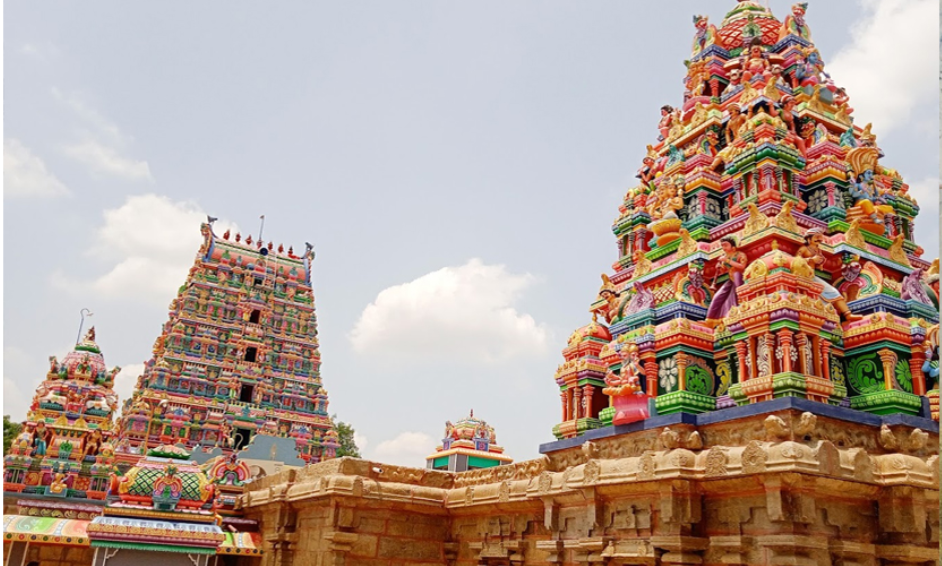

ALANGUDI
LORD SHIVA TEMPLE

Devas and asuras used Vasuki as a churning-string and Mount Mandara as a pole.
Shiva drank the poison to save the universe, with Alangudi being the location where this occurred (Alam means “poison”, Gudi means “drinking”).
Built by King Sundarapandian (1216 – 1238 CE) in commemoration of the event.
Depicted with two Rishis instead of four, accompanied by a rabbit (Mehta Dakshinamoorthy).
It is firmly held that if devotees light 24 ghee lamps and perform 24 rounds of Pradakshina around the Shiva shrine.
The temple, which holds an image of Jupiter, is one of the nine Navagraha temples in Tamil Nadu and is a part of the state’s well-known Navagraha pilgrimage.
The temple features six daily rituals that take place at various times between 6:00 a.m. and 8:30 p.m.four festivals.